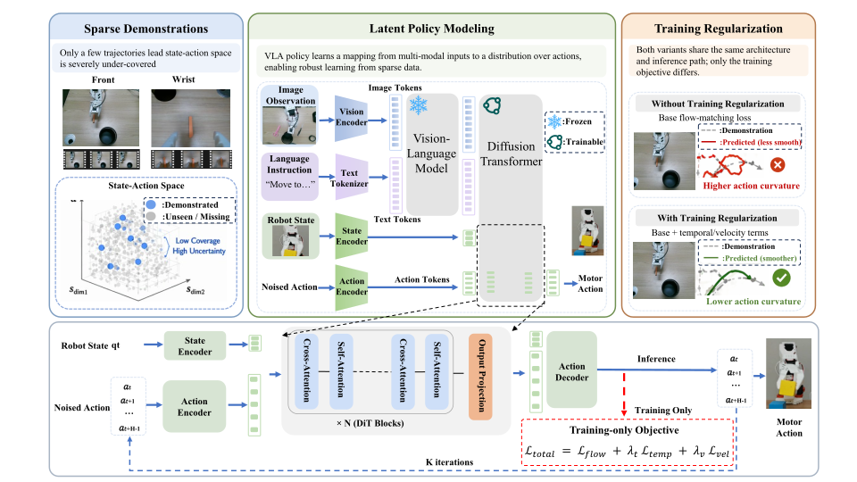

01
Training-only sequence regularization
The released policy architecture and inference path are retained. During training, first-order vector-field variation and second-order clean-action curvature are added to the original masked flow-matching objective. Both terms operate only on valid action dimensions.
Open the integration hook